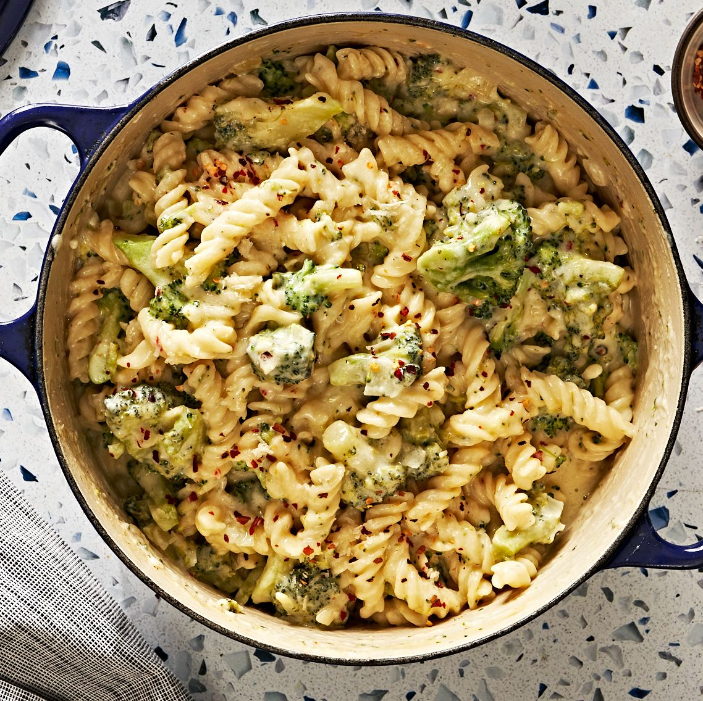

My Receipe
One-Pot Broccoli Cheese Pasta

We love an easy one-pot dinner for the simplicity and the cleanup. This
one-pot creamy pasta is kind of like the grown-up version of mac & cheese,
but even easier and better. The broccoli is in no way hidden, but it's a
great way to sneak in an extra serving of greens, and even the pickiest of
eaters will eat their vegetables if they are coated in cheese. 😉 Throw
everything together, and you've got yourself a delicious, no-fuss meal in
a little more then 30 minutes.
Ingredients
- 1 tbsp. extra-virgin olive oil
- 1 small yellow onion, chopped
- 1 medium head broccoli, cut into small florets
Instructions
-
In a large pot over medium heat, heat oil. Add onions and cook until
soft, about 5 minutes. Add garlic and cook until fragrant, about 1
minute more.
-
Add pasta and broccoli, then stir in water and half-and-half. Season
with salt, pepper, and red pepper flakes. Bring to a boil, reduce heat
and let simmer, stirring occasionally, until pasta is al dente, 12 to 14
minutes.
- Add cheeses and stir until melted.
| YIELDS |
PREP TIME |
TOTAL TIME |
CAL/SERV |
| 6 serving(s) |
10 mins |
35 mins |
651 |
Back to Homepage